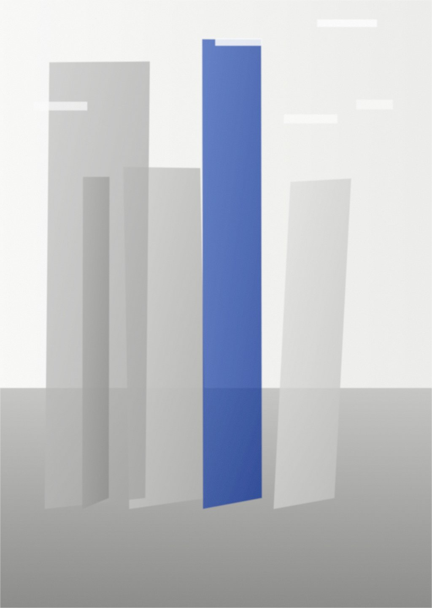

ZIFEIYU PPT SKILL
VOL. 01 — 2026
浏览器里直接演示，再一键导出可编辑 PPTX、矢量 PDF 与逐页 PNG。
网页 PPT · 可编辑导出
FIG. 01 — 示意图
00 — CONTENTS
02 / 17
01
十二种风格，开场先挑一种
P. 04
02
先量后画，文字始终可编辑
P. 07
03
十六条规则，错误清零才交付
P. 10
04
从大纲到成稿的四步
P. 13
ZIFEIYU PPT SKILL · STYLE B — SWISS
NOTE — 设计原则
03 / 17
— SKILL.md · 设计原则
ZIFEIYU PPT SKILL · STYLE B — SWISS
CHAPTER 01 / 04
04 / 17
01
03 — QUALITY GATES
10 / 17
16
20
3
R1–R16，从版式注册一路查到 PPTX 导出一致性
其中 12 个是每种风格必须覆盖的核心角色
PPTX · PDF · PNG，HTML 是唯一的源
SOURCE — scripts/validate.mjs · scripts/lib/roles.mjs
04 — WORKFLOW
13 / 17
01
看风格画廊，按场合挑一种，整份 deck 只用这一种。
02
按内容形状找角色，复制版式骨架，只换文字和图片。
03
查类名、字号、出处与导出一致性，错误必须清零。
04
一键得到可编辑 PPTX、矢量 PDF 与逐页 PNG。
ZIFEIYU PPT SKILL · STYLE B — SWISS